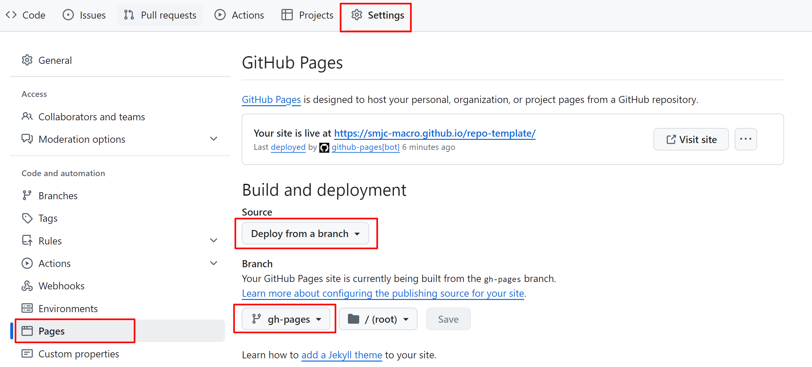

构建参考
repo-template 是一个 MKDocs-Materials 模板，用于快速搭建宏程序帮助文档的 Github Pages，按照以下步骤即可构建站点。
安装 Python
安装 Python 解释器，建议使用 3.12 及以上版本。
安装 VS Code
安装 VS Code 用于书写项目的 Markdown 文档。
额外说明
实际上这里不一定要使用 VS Code，任意一个文本编辑器都可以，但是使用 VS Code 可以更方便地建立 Python 的虚拟环境。
配置虚拟环境
打开 VS Code，安装 Python 扩展，按下快捷键 Ctrl+Shift+P，输入 Python: Create Environment，根据提示建立一个 .venv 虚拟环境，注意勾选安装 requirements.txt 中的依赖项。
快捷键 Ctrl+` 打开终端，运行以下命令激活虚拟环境：
撰写项目文档
需使用 markdown 格式撰写项目文档。建议所有项目文档都存放在 docs 目录下。
修改构建文件
修改 mkdocs.yml 文件，修改站点信息、导航信息等。
各配置项的具体含义请参考：
本地预览
运行 mkdocs serve 命令，即可在浏览器中预览项目文档。默认地址为：127.0.0.1:8000/repo-template
远程部署
将本地仓库推送到远程仓库，Github Action 会自动部署项目文档。
部署后的必要操作
您需要前往仓库的 Settings -> Pages -> Build and deployment -> Source 中选择 Deploy from a branch，并在下方的 Branch 中选择 gh-pages 开启仓库的 Github Pages 功能。

其他可选步骤
添加 Website 到仓库主页的信息中
前往仓库主页，点击右侧边栏的齿轮，勾选 Use your Github Pages website 即可。
补充说明
您可以前往项目仓库的 Action 页面查看站点的构建过程。